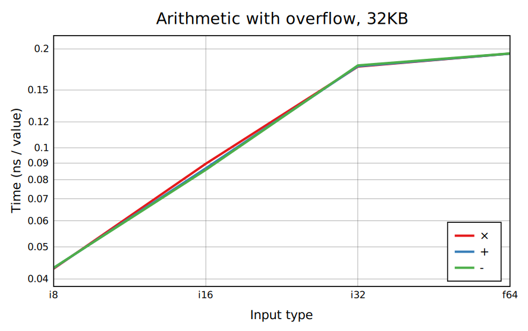
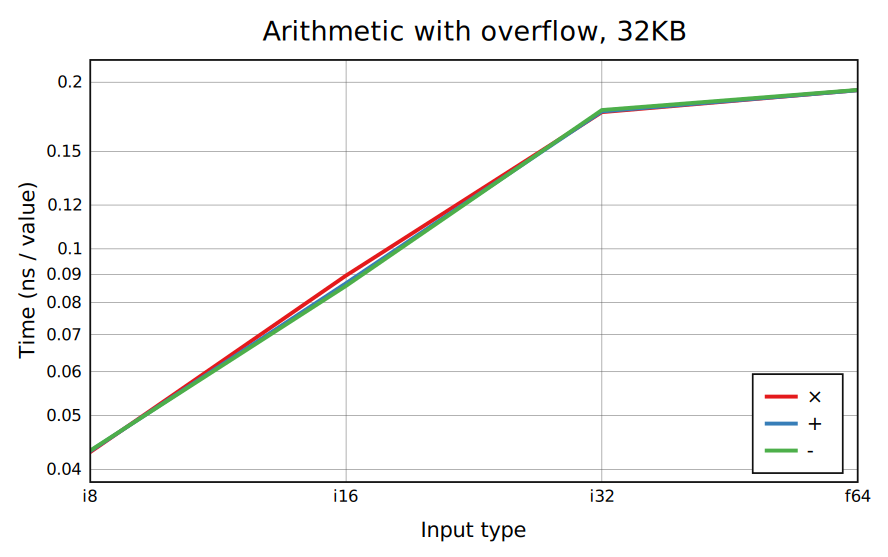
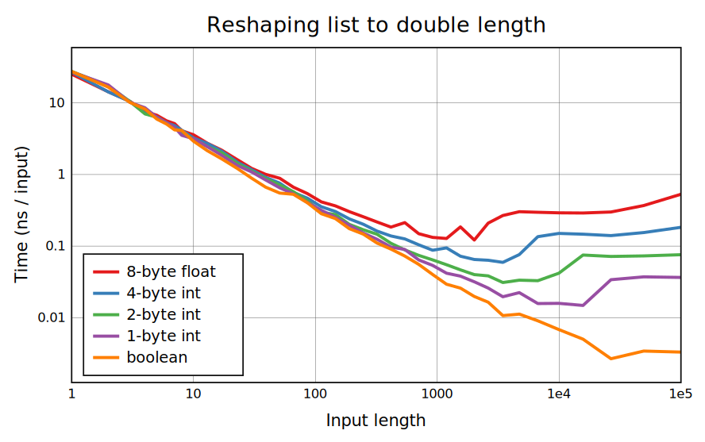
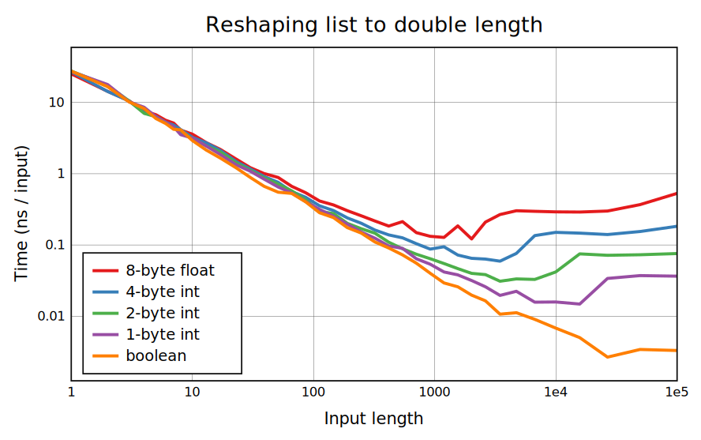
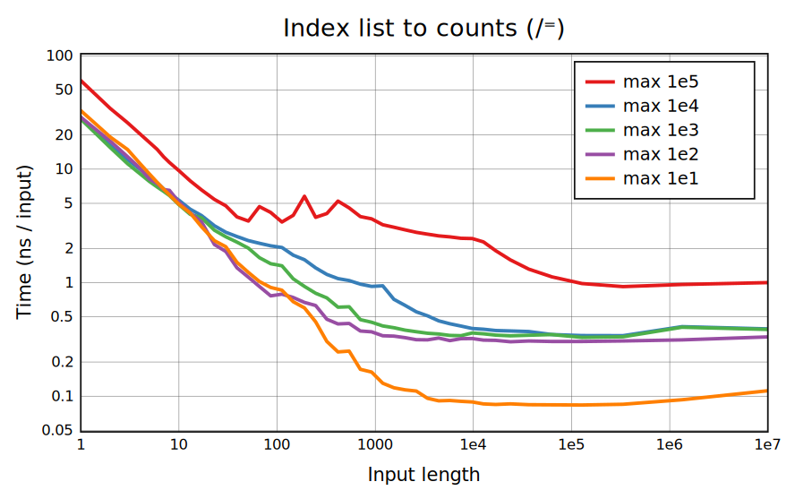
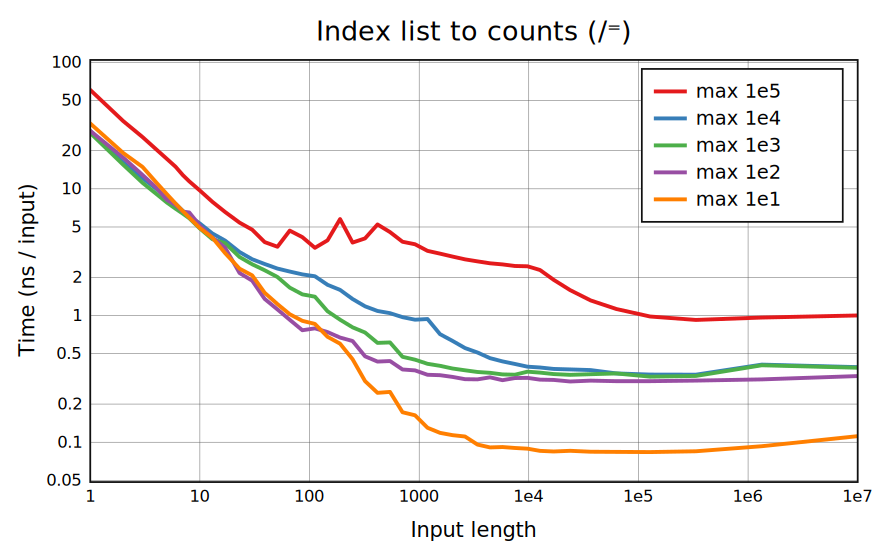
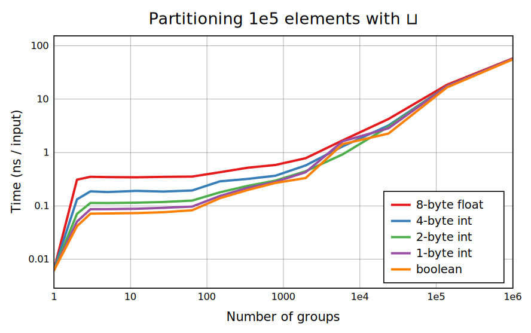
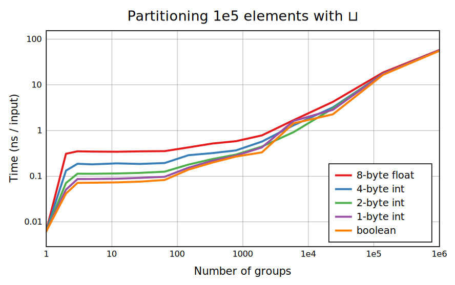

Not all benchmarks are included on this page. Header links go to pages with full benchmarks and more detailed explanation.
The benchmarks found in bencharray are taken on an AMD Ryzen 7 8745HS processor using CBQN v0.11.0 compiled with make o3 has='bmi2' (which also enables AVX2 and earlier vector instructions). These options are used instead of the usual make o3n to compile without AVX-512 support, as this CPU supports it but most consumer hardware doesn't.
The arithmetic functions +-×⌈⌊, and comparisons, are standard SIMD functionality. With +-× an overflow check is needed, and if it happens a result in a larger type needs to be created. Dyadic | has some optimization for integers but is only really fast when ùï® is an atom.
Most other primitives, including ÷√⋆ and ⋆⁼, require conversion to floats, so will ideally run at the same speed for all types. ÷ and monadic √ have native SIMD support. Libraries to compute others using SIMD exist but CBQN doesn't use anything like this yet.
Folds and scans are defined as a sequential evaluation, but for operand functions that are associative and commutative, evaluation can be reordered to give efficient SIMD implementations. These include +-×⌈⌊ on integers, ⌈⌊ on floats, and many boolean functions. Because floating-point + (along with - and ×) isn't exactly associative, we have •math.Sum to perform a fast sum with unspecified ordering. CBQN currently has special code for common operands but not rarely-used ones like -. Uncovered cases run at about 3ns/value because that's the overhead of calling a primitive function.
If it had no overhead, Table would have the same per-output timing as scalar-list arithmetic, or sometimes better as overflow checking can be done purely using the range of both arguments. It's close for large right arguments but CBQN still does an extra copy for now. For smaller right arguments the limiting operation is a constant Replicate (/) on the right argument, or sections of it.
Selection is optimized using AVX2 to perform range-checking and wrapping (if necessary) more quickly, and for table lookups with shuffle instructions when the right argument is small. With a small enough table these cases can be fairly fast, while selecting from many values is slow relative to SIMD operations.
Reverse on a rank-1 array is fairly simple to optimize (in fact, one Singeli tutorial focuses on it), and is implemented with SIMD code. The 2-dimensional benchmarks shown here reduce to this case if the width is 1 for ⌽ or the maximum for ⌽˘, and the case in ⌽ where the cell has the width of some type is implemented similarly. Then ⌽˘ for short rows is implemented as i⊸⊏˘ for the appropriate indices.
The speed of Reshape with a large result should essentially be limited by the amount of memory written. The current method is to copy the argument to the result, then repeatedly double it until it reaches a suitable block size for filling the rest of the result. There are special cases for 1-byte and 8-byte blocks.
Replicate is a complicated family of functions, and CBQN does a lot of work to get consistent worst-case performance and take advantage of special cases: sparse input, and booleans with 1s and 0s mostly grouped together. Except for the grouped case, each algorithm takes some amount of time to process each input value, and some to produce an output value, and CBQN chooses between them based on the density. Note that the graphs for a boolean argument use ns/input and those for the general case use ns/output! In the flat sections for the boolean case, the performance doesn't depend on density at all, usually because the same writes are performed regardless, just overlapping more when the density is smaller.
The algorithm of moving values sequentially into result arrays provides a good baseline performance for Group, but as it works on single memory accesses it can often be improved. CBQN has a few optimizations based on analysis of ùï®. If it has long sequences of equal values, these are detected in order to process in chunks. A similar case applies if it doesn't have these long sequences but is sorted. And if it has many instances of ¬Ø1 they're quickly filtered out with Replicate.
CBQN is able to use AVX2 kernel transposes for all 2D shapes with at least one long side (some reorderings of more than 2 axes aren't covered). In the middle of the graph where both sides are long, fixed kernel sizes are used, while the edges have code for specific heights and widths. But the slow parts for 2-byte and smaller types are mostly places where the full-size kernel is overlapped or only partially used, wasting work. Booleans have dedicated height- and width-2 code but otherwise are simply converted to 1-byte integers and back. The 8-byte transpose has a major slowdown due to misaligned writes that doesn't appear below 2e3 total elements (4-byte data is also somewhat affected). The downward spikes at multiples of 8 come from a mitigation for cache associativity issues that normally happen when a side length is a multiple of a large power of 2, which also avoids this alignment issue.
Searching and sorting are the heaviest of BQN's commonly used functions, performance-wise. Element size is very important, as doubling it often slows things down by more than a factor of two.
For 1- and 2-byte elements, lookup tables usually fit entirely in L1 cache (2-byte tables with large elements can be iffy). Lookup tables are so fast that it doesn't make sense to try for adaptivity on these arguments. For larger elements, comparison sorting and hash tables are usually needed, and adaptive sorting can be used. The only case that doesn't have specialized code yet is sorting 8-byte elements.
Currently CBQN has solid counting and radix sort implementations used for 1 to 4-byte elements, and uses the generic Timsort for 8-byte elements. 4-byte sorting is competitive with the state of the art for random elements but isn't adaptive at all.
The x-axis format here is used to display a small searched-in array (ùï® for ⊐ and ⊒, and ùï© for ∊) on the left and a small searched-for array (the other argument) on the right. "Half hits" means that half the values in the searched-for argument are found at some index, and is tough on branchy implementations; depending on the application all hits could be more relevant.
The generic case uses lookup tables for 1- and 2-byte elements (with SIMD creation and membership for 1-byte), and hashing for 4- and 8-byte. When one argument is short either linear lookups or SIMD binary search may be used.
CBQN runs fast on all CPU-native types and booleans. General cases use a mix of direct lookup and hash tables, and there's also all-pairs comparison for short arguments and adjacent-pairs for sorted ones. The function Classify (⊐) is troublesome because of the way indices depend on the number of unique elements seen so far, a problem that dyadic ⊐ (or ⊐˜) doesn't have. ⍷ is mostly just implemented as ∊⊸/, which is hardly slower than ∊.
Bins is mostly fast. This graph shows AVX2 binary searches at the left for 1- to 4-byte types, table lookups for 1- and 2-byte types, and branchless binary searches with 4-way interleaving for 4- and 8-byte types. A shortcoming is the 4- and 8-byte case where ùï® is very long, which has poor cache usage and could be improved by partitioning ùï©.


 



 

 
